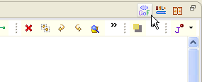
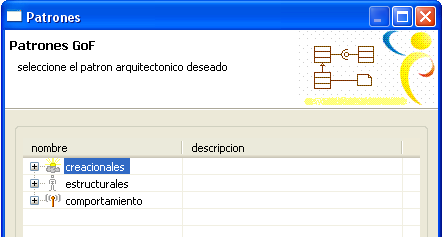
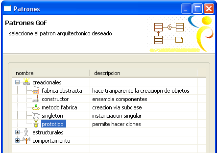
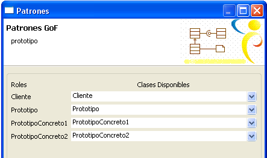
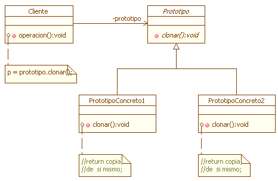

|
Componente de Patrones |
|
El Componente de Patrones es una extensión del framework UML+, que permite de manera fácil plasmar patrones de diseño dentro del plugin de Clases. El componente posee patrones incluye entre otros todos los patrones "clásicos" del GoF, entre los cuales están.
Para acceder al componente es necesario tener desplegado en el marco de expresión un diagrama de clases, posteriormente se debe seleccionar el ícono con forma de círculo punteado con las letras GoF (Gang of Four) de la parte superior derecha del marco. En la Figura 1 se muestra la ubicación del acceso al componente de patrones.  Figura 1. Accediendo al componente de Patrones  Figura 2. Ventana Principal del Componente Para este caso se creará como ejemplo un prototipo, que hace parte de los patrones creacionales. Se selecciona el tipo y se hace click en siguiente como se muestra en la Figura 3.  Figura 3. Eligiendo el patrón a cargar En esta ventana aparecerán todos los roles que requiere este patrón, junto con las clases disponibles en el diagrama para acomodarse a dichos roles. Si no se selecciona una clase que ya exista en el diagrama, el componente la creará de acuerdo al nombre suministrado en el espacio frente al rol. Para este caso se dejarán los nombres por defecto de cada clase para observar como se depliegan estas en el diagrama. Una vez ajustadas las clases se hace click en finalizar.La Figura 4 muestra un ejemplo de creación.  Figura 4. Ingreso de los datos para la instanciación del patrón La Figura 5 muestra el patrón ya creado en el Marco de Exposición. Las clases son creadas con sus respectivos métodos para ajustarse al patrón, o en caso de existir dichas clases, simpelemente los métodos son agregados. Cabe destacar que al diagrama también son agregados comentarios con el fin de explicar las funciones fundamentales para el funcionamiento del patrón.  Figura 5. Patrón desplegado sobre el entorno |